Tablet in reparto e controllo in ufficio
| Azienda | |
| Consegnato il | |
| Per assistenza |
I dipendenti registrano il lavoro sul tablet, al posto del rapportino di carta. Le righe arrivano in una cartella su Google Drive, l’ufficio le controlla e le porta nel file Excel dei rapportini, dal quale si lavora come sempre.
Questa parte è per chi lavora in reparto. Bastano tre gesti: entrare col proprio nome, avviare la lavorazione, chiuderla scrivendo i pezzi.
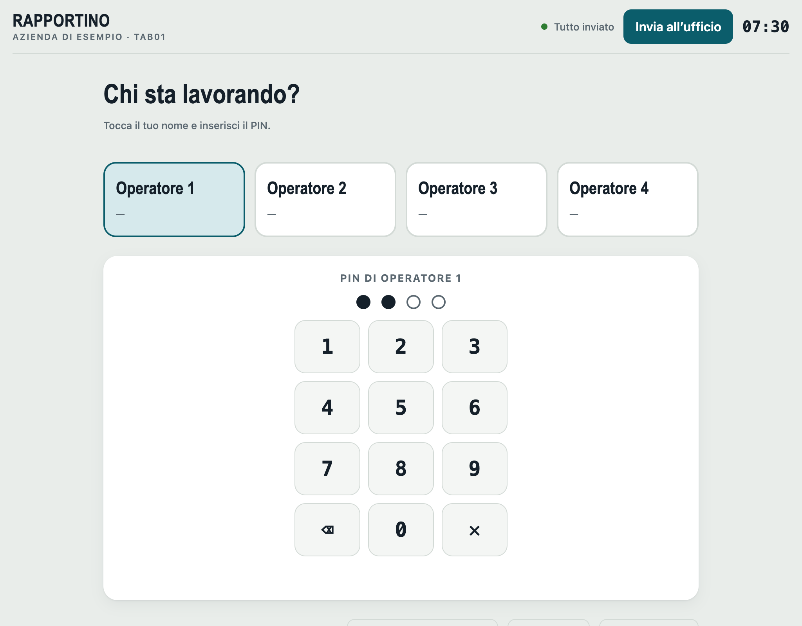
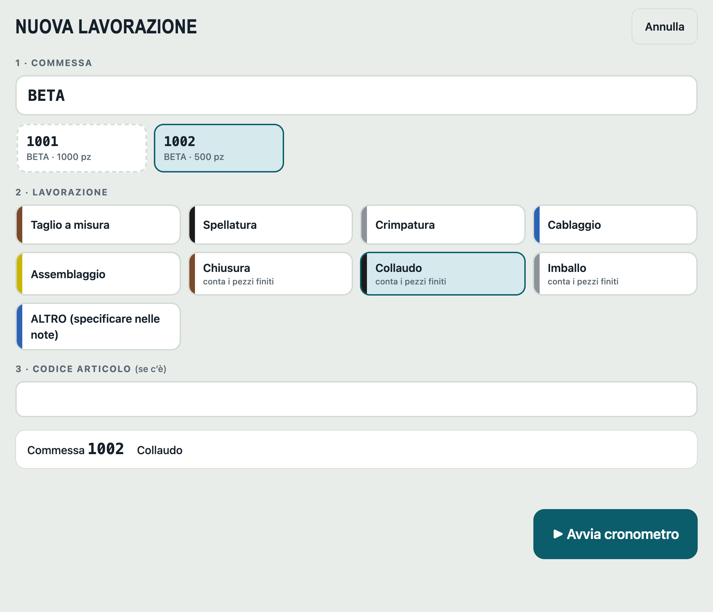
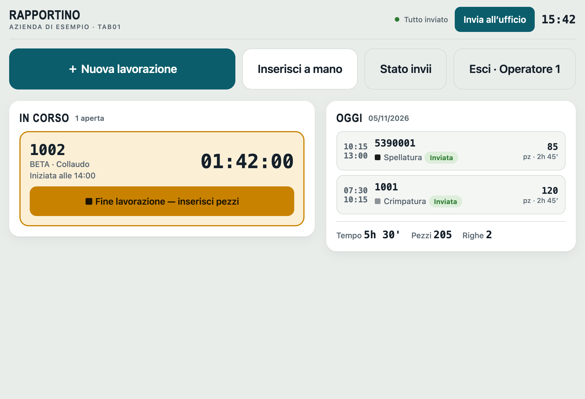
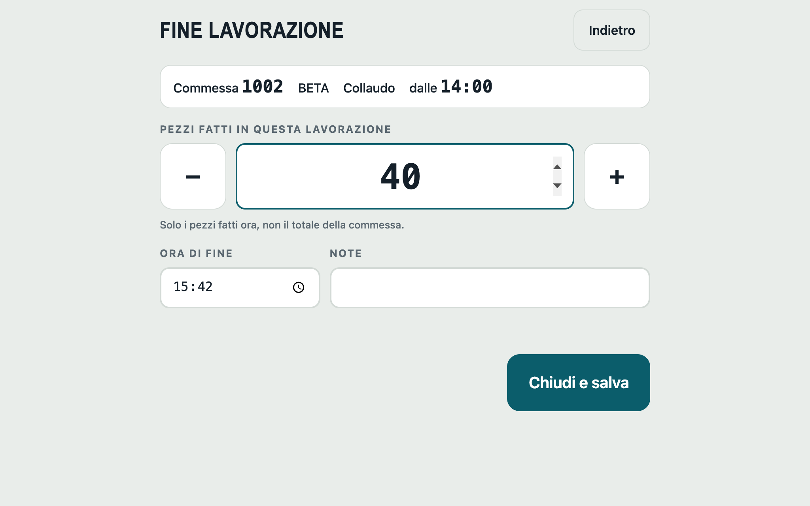
Serve quando hai dimenticato di avviare il cronometro.
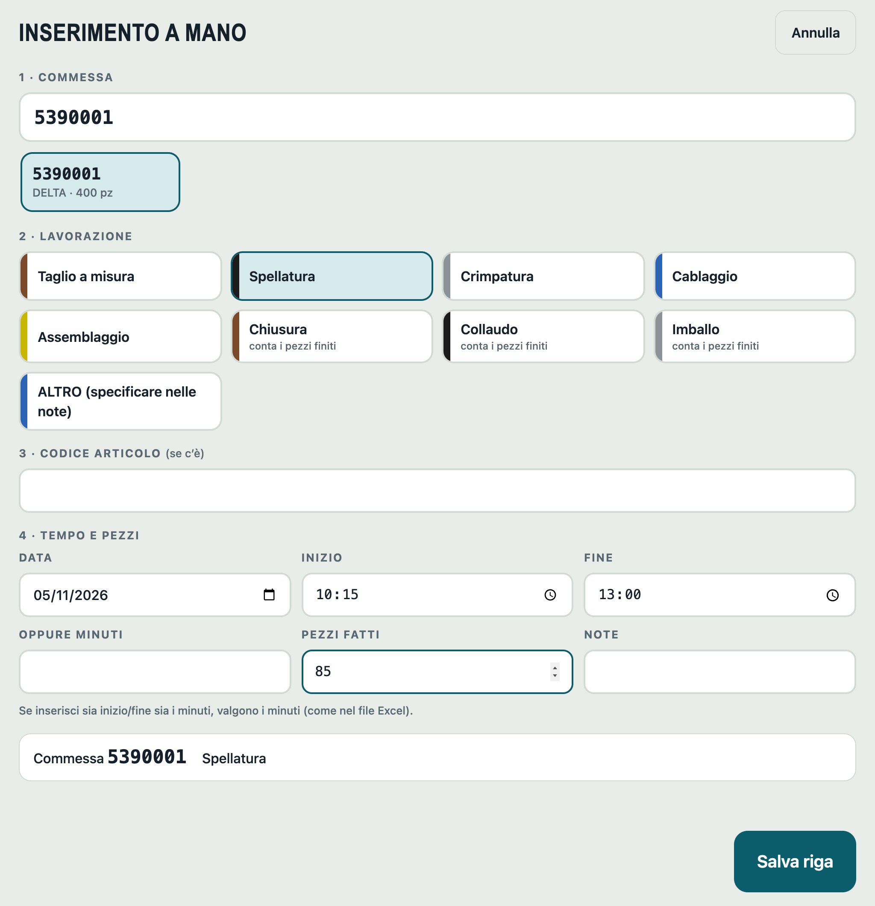
Se una lavorazione è aperta da un giorno precedente o da più di 10 ore, l’app lo segnala: vicino al tuo nome compare 1 da chiudere e, una volta entrato, un avviso rosso sulla scheda.
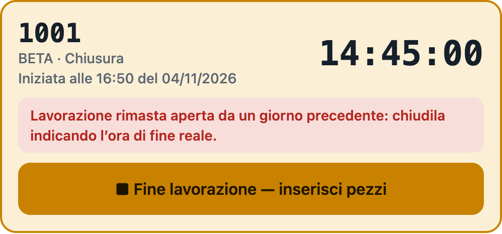
Chiudila come sempre, scrivendo l’ora in cui hai finito davvero. Se è di un giorno precedente, l’ora di fine non viene proposta: devi scriverla tu.
Non devi fare niente: ogni riga chiusa parte da sola. Se non c’è rete, il tablet riprova ogni minuto mentre l’app è aperta, e di nuovo quando la riapri. Se vuoi, puoi forzare l’invio con Invia all’ufficio, in alto.
| In alto vedi | Significa |
|---|---|
| ● Tutto inviato | L’ufficio ha ricevuto tutte le righe chiuse. |
| ● 2 da inviare | Due righe stanno aspettando di partire. |
| ● 2 da inviare · non riuscito, riprovo | Manca la rete o c’è un problema. Le righe sono al sicuro sul tablet. |
Con Stato invii vedi le ultime righe del tablet, una per una, e la data dell’ultimo invio riuscito.
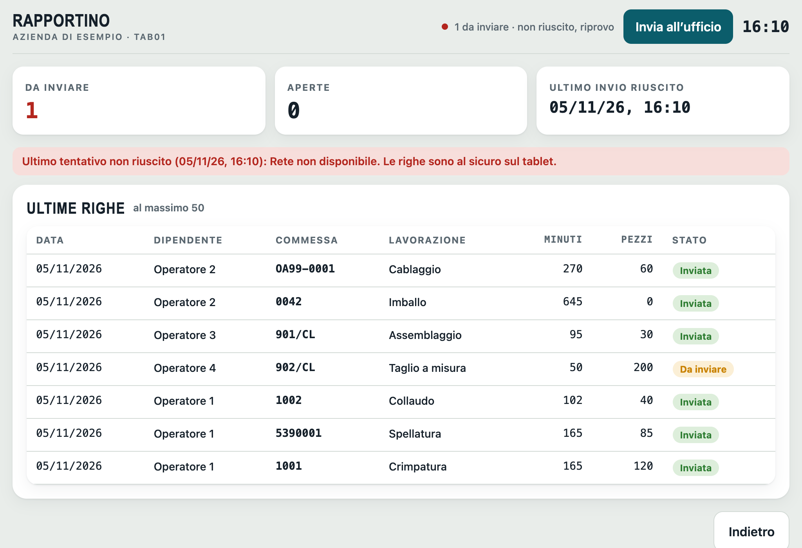
Da stampare e tenere vicino al tablet.
Commessa che non si trova, PIN dimenticato, nome che manca: rivolgiti all’ufficio.
Questa parte è per chi controlla i rapportini. L’app si usa in Google Chrome o Microsoft Edge, su un solo PC: due PC che lavorano insieme possono entrare in conflitto.
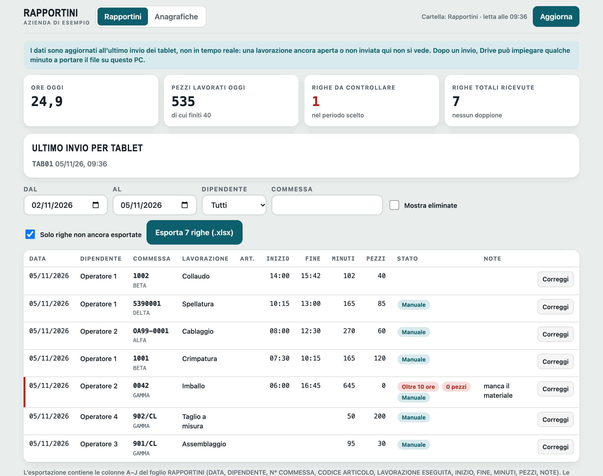
Ultimo invio per tablet: se un tablet è fermo da troppo tempo, controlla che sia acceso, connesso e con l’app aperta.
I filtri scelgono periodo, dipendente e commessa. All’apertura è impostata la settimana in corso.
Le righe da guardare con attenzione hanno una riga rossa sul bordo sinistro e uno di questi segnali:
| Segnale | Cosa controllare |
|---|---|
| 0 pezzi | La lavorazione è stata chiusa senza pezzi: è giusto così? |
| Oltre 10 ore | Quasi sempre è una lavorazione chiusa tardi: correggi ora di fine e minuti. |
| Non chiusa | La riga non ha i minuti: indicali con «Correggi». Finché non li ha, non viene esportata. |
| Commessa non in anagrafica | Il codice non è nell’elenco commesse: correggi la riga oppure aggiungi la commessa. |
Altri segnali, solo informativi: Manuale inserita a mano, Corretta modificata dall’ufficio, Esportata già portata in Excel.
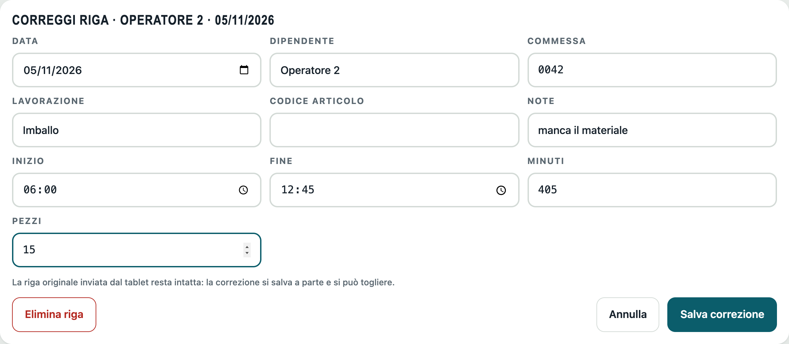
Se correggi o elimini una riga già incollata in Excel, l’app non può cambiare il file annuale al posto tuo. La riga prende il segnale Da riportare in Excel, e il pulsante diventa, per esempio, «Esporta 0 righe + 1 correzione».
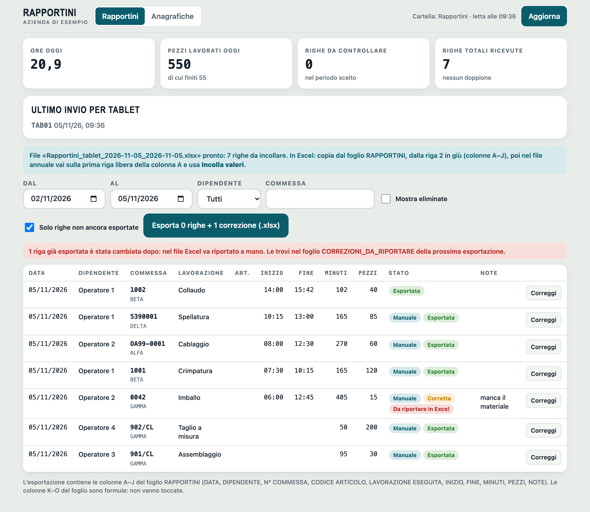
| Cosa fare | Nel file annuale |
|---|---|
| CORREGGI | Scrivi i valori della riga DOPO sulla riga PRIMA. |
| ELIMINA | Cancella la riga PRIMA. |
| RIMETTI | Riaggiungi la riga DOPO: era stata eliminata e poi ripristinata. |
Nella scheda Anagrafiche si gestisce quello che i dipendenti vedono sul tablet. Dopo un salvataggio, i tablet ricevono le modifiche entro circa mezz’ora; per averle prima, sul tablet si preme Aggiorna anagrafiche nella schermata di accesso. Serve che Drive abbia già sincronizzato il file.
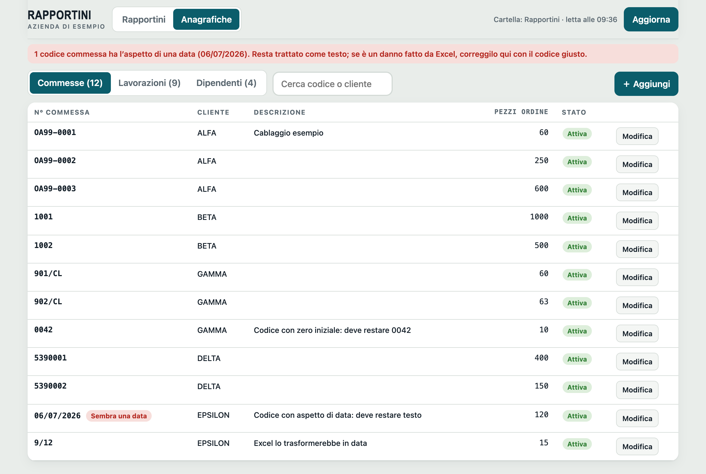
Una commessa chiusa o un dipendente andato via non si cancellano: togli la spunta Attiva e sparisce dai tablet. Per le lavorazioni, la spunta Conta i pezzi finiti va messa come nel file Excel.
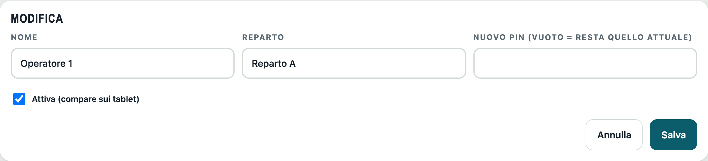
Ogni dipendente deve avere un PIN di 4 cifre, altrimenti non può entrare. I PIN non si possono rileggere: se uno viene dimenticato, assegnane uno nuovo. Lascia il campo vuoto per tenere quello attuale.
Con Importa dal file Excel dei rapportini l’app legge commesse, lavorazioni e dipendenti dal file annuale e mostra un’anteprima prima di salvare. Non cancella niente e non tocca i PIN già impostati. I dipendenti nuovi non potranno entrare finché non assegni loro un PIN.
Si fa una volta sola. La cartella su Google Drive e il collegamento sono già preparati dal consulente, che fornisce anche indirizzo dello script e token.
Indirizzo dell’app: https://marios921.github.io/rapportini-provvisorio/tablet/
| Android | iPad |
|---|---|
|
|
Poi apri l’app dall’icona appena creata, non dal browser. Su iPad è indispensabile: il browser e l’app installata conservano i dati separatamente. Compila quindi la prima configurazione, con la rete attiva:
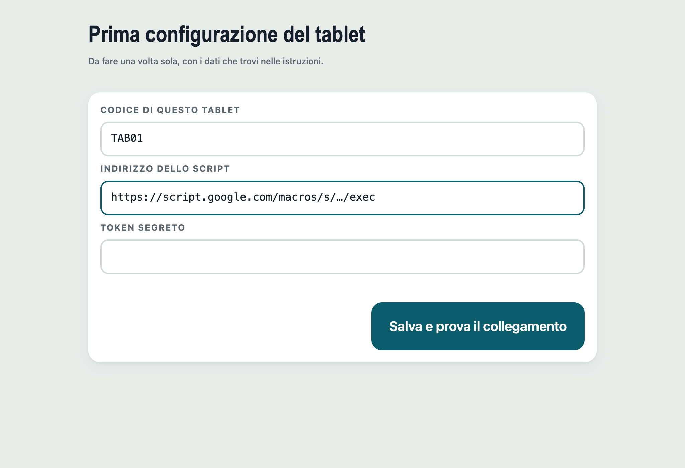
| Campo | Cosa scrivere |
|---|---|
| Codice di questo tablet | Un codice diverso per ogni tablet: TAB01, TAB02, … |
| Indirizzo dello script | Quello fornito dal consulente; finisce con /exec |
| Token segreto | La parola segreta fornita dal consulente |
Per cambiare le impostazioni in seguito: Impostazioni, nella schermata di accesso. Per modificarle serve il token attuale.
| Cosa succede | Cosa fare |
|---|---|
| Sul tablet | |
| Ho dimenticato il PIN | L’ufficio ne assegna uno nuovo. Sul tablet, Aggiorna anagrafiche nella schermata di accesso. |
| Il mio nome non c’è, oppure «non è impostato un PIN» | L’ufficio deve aggiungerti o assegnarti il PIN. Poi Aggiorna anagrafiche. |
| Non trovo la commessa | L’ufficio deve aprirla o riattivarla. Poi Aggiorna anagrafiche. |
| «L’ora di fine è nel futuro» | Controlla l’ora scritta: non può essere più avanti dell’ora attuale. |
| «Non riuscito, riprovo» e nessuna rete | Continua a lavorare, le righe sono salvate. Partono da sole quando la rete torna, con l’app aperta. |
| «Non riuscito» anche con la rete, o «Token non valido» | Avvisa il consulente: l’indirizzo o il token potrebbero essere cambiati. Le righe restano sul tablet. |
| Ho sbagliato pezzi o commessa dopo aver chiuso | Il tablet non permette modifiche: avvisa l’ufficio, che corregge la riga. |
| Ho avviato per errore una lavorazione | Chiudila scrivendo 0 pezzi, con una nota, e avvisa l’ufficio, che la elimina. |
| In ufficio | |
| «Serve Chrome o Edge» | Apri l’app con Google Chrome o Microsoft Edge. |
| Mancano righe che il tablet dà come inviate | Controlla che Drive per desktop sia attivo e abbia finito di sincronizzare, attendi qualche minuto e premi Aggiorna. |
| «File non letti» | Di solito è una sincronizzazione in corso: riprova tra poco con Aggiorna. Se resta, avvisa il consulente. |
| «Il file … non si legge» | L’app non lo sovrascrive, per non perdere niente. Avvisa il consulente: su Drive restano le versioni precedenti. |
| «È cambiato dopo l’ultima lettura» | Forse un altro PC ha lavorato sull’archivio. Premi Aggiorna e ripeti l’operazione, poi usa un solo PC. |
| «Righe arrivate due volte con contenuto diverso» | L’app ha tenuto la prima versione. Controlla la riga e correggila se serve. |
| Vedo «doppioni scartati» | È normale: una stessa riga è arrivata due volte e l’app la conta una sola. |
| Il pulsante Esporta è spento | Non c’è niente di nuovo nel periodo scelto. Controlla i filtri e premi Aggiorna. |